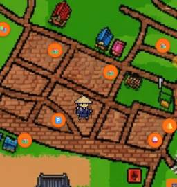
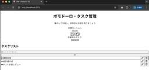

ForgeVision Engineer Blog
https://techblog.forgevision.com/
フォージビジョン エンジニア ブログ
フィード

続・世界遺産の島の半農エンジニアがKiro×Bedrockで観光スタンプラリーを育てた話 〜古文書もAIもグループ対戦も全部入り、でも一番キツかったのは人間の脳だった〜
ForgeVision Engineer Blog
こんにちは！佐渡島の半農半エンジニア、矢部です。前回のブログでは、GPS×AI画像認証の「二重認証スタンプラリー」をKiroとAmazon Bedrockで作った話を書きました。今回はその「その後」の話です。
5日前

AWS Kiro 徹底検証：Vibe vs Spec モードでポモドーロタイマーを作ってみた 後半
ForgeVision Engineer Blog
AWSグループ ふじはらです。本記事は AWS Kiro 徹底検証：Vibe vs Spec モードでポモドーロタイマーを作ってみた の後半になります。
5日前

【AI時代のDocs運用】 Kiro × Hooks × MkDocsでドキュメントを継続的に更新・管理する②
ForgeVision Engineer Blog
こんにちは、AWSグループの藤岡です。 前回の記事では、AI時代のDocs運用の1つのアプローチとして、hooksを活用した以下構成のDocs基盤について紹介・解説しました。 GitとKiroのダブルフックによる自動検証と、MKDocsによる閲覧・検索 techblog.forgevision.com 本記事では、各構成のセットアップと動作確認を行います。 セットアップ①Kiroエージェントフック セットアップ② Gitフック ドキュメントの正常な状態の定義 Gitフックの設定 バリデーターの実装 セットアップ③MKDocs 動作を確認してみた Kiro hooks git hooks MKD…
9日前
【AI時代のDocs運用】 Kiro × Hooks × MkDocsでドキュメントを継続的に更新・管理する①
ForgeVision Engineer Blog
こんにちは、AWSグループの藤岡です。 システム立ち上げ時には、議論・検討した結果を仕様書や設計書として記録します。しかし、システムの運用が進むにつれて、以下のような課題に直面したことはないでしょうか（私はあります） 更新漏れで、古い仕様が残る どれが正式版かわからない 誰が責任者かわからない 更新されたか判断できない Gitで一定はカバーできますが、上記の状態になるとさらに更新されずにコードとの乖離が大きくなるといった悪循環に陥り、ドキュメントが機能しなくなります。 ただ最近は、コーディングエージェントを使った実装やドキュメンテーションが日進月歩です。ドキュメントはAIエージェントにとっての…
9日前
【社内勉強会レポート】re:Invent 2025の必須級アップデートをワイワイ振り返りました！
ForgeVision Engineer Blog
こんにちは！フォージビジョンの藤岡です。 AWSのアップデートって、日々たくさん発表されますよね。多数のアップデート情報をひとりでキャッチアップするのは本当に大変です。 そこでフォージビジョンでは、毎週火曜に有志で集まって、AWSのアップデートを振り返る会（通称：ピザ会）を開催しています。 誰かと一緒にゆるーく話しながら最新情報を追っていくことで、継続的にキャッチアップしやすく、プロジェクトでの活用やブログでのアウトプットにも繋がっています。 techblog.forgevision.com 今回は、ピザ会司会の私の企画で、「re:Invent期間で発表された超重要なアップデートをみんなで押さ…
16日前
Kiroでもペルソナを付与することでデザインが変わる！
ForgeVision Engineer Blog
こんにちは、モダンアプリケーションチームの石井です。 先日このような記事を見かけました。 qiita.com AIでアプリのデザインをするときに、誰が使うか（ペルソナ）を足すだけで、出力されるデザインの解像度が変わるというものです。 今回はKiroでも同じペルソナを利用してデザインが変わるのか試してみます。 環境 Windows 11 Pro Kiro(Version 0.10.32) Claude Opus 4.6 事前準備 まず、Kiroを起動したら左ペインに表示されたKiroのアイコンをクリックし、[AGENT STEERING & SKILLS] の [Generate Steerin…
17日前
あれから 5 年...。家族の “生活向上キャンペーン” を再構築した話
ForgeVision Engineer Blog
こんにちは、プライベートでは二児の父をやっている尾谷です。私ごとですが、2021 年に子供たちの頑張った実績を記録する Alexa スキルと Vue.js ベースの WEB アプリを作りました。 本ブログでは、そのアプリを KIRO に作り変えてもらったエピソードを紹介します。
18日前
Kiroを補助魔法で強化！おすすめのKiro Powersを紹介！
ForgeVision Engineer Blog
こんにちは、AWSグループの山口です。最近は、自分にあった Kiro の実行環境作りを模索しています。この記事では、私がKiroに設定することの多い Kiro Powers を紹介します。 Kiro Powersとは おすすめ その１ AWS Observability おすすめ その２ IAM Policy Autopilot おすすめ その３ AWS Cost Optimization まとめ Kiro Powersとは 2025年12月に Kiro をより便利に使うための Kiro Powers という機能が提供されました。 Kiro Powers は、MCP を利用する際にクレジットや…
21日前
Kiro であのRPGを再現してみた！
ForgeVision Engineer Blog
こんにちは、クラウドインテグレーション事業部の遅れてきたルーキー八木です。開発未経験者がKiroの力でRPGモドキを作ってみました。
23日前
自分ではうまくいかなかったAmazon S3 Metadataの外部参照を、Kiroに設計させて検証する
ForgeVision Engineer Blog
こんにちは、開発グループの寺田です。 本記事では、私自身が過去に検証してうまく実現できなかった 「Amazon S3 Metadata を外部システムから参照する機能」について、 Kiroに設計と実装を委ねた場合に成立するのかを検証します。 はじめに Kiroに依頼 Kiroが設計したアーキテクチャ コンソールでは動くのにBoto3では動かない エラー修正後のアーキテクチャ 動作確認 まとめ はじめに Amazon S3 Metadataは、S3オブジェクトに関する情報を自動収集し、検索・分析を可能にする機能です。 収集された情報はInventory（オブジェクト一覧）とJournal（変更履…
23日前
Kiroはどっちで作ると良い？15パズル実装で見る Spec vs Vibe
ForgeVision Engineer Blog
Kiroの1000クレジットを使って、同じ15パズルを題材にSpec sessionとVibe sessionの違いを比較。Specではrequirements/design/tasksで要件を整理し、Vibeでは条件をそろえて会話ベースで実装。進め方・残る情報・使い分けの感触をまとめます。
24日前
Kiro 徹底検証：Vibe vs Spec モードでポモドーロタイマーを作ってみた 前半
ForgeVision Engineer Blog
AWSグループ ふじはらです。AWSから登場したエージェント型IDE「Kiro」。AIがコードを書くだけでなく、自らコマンドを実行し、設計までこなすというこのツールを本格的に試す機会を得ました。
1ヶ月前
世界遺産の島の半農エンジニアがKiro×Bedrockで観光スタンプラリーアプリつくってみた 〜写真撮るだけでAIがスタンプ押してくれる仕組み〜
ForgeVision Engineer Blog
こんにちは！世界遺産「佐渡島の金山」で有名になっちゃった佐渡島で、半農半エンジニアをやっている矢部です。「佐渡の相川を歩いて、焼き物オブジェを撮影するだけでスタンプが集まるアプリ」をKiroとAmazon Bedrockで作りました。
1ヶ月前
Kiro と手を繋いで、はじめてのゲーム製作
ForgeVision Engineer Blog
こんにちは、AWSグループのホンドウです。kiroを使う機会をいただいたため、開発スーパー初心者の私がAIに頼り切ってwebコンテンツを作成してみました。
1ヶ月前
Kiro を使った SVG アニメーション工房
ForgeVision Engineer Blog
こんにちは、動画好きの尾谷です。 観るのも好きですが、作るのがもっと好きです。本ブログでは、Kiro を使ってアニメーション SVG を作る方法をご紹介します。
1ヶ月前
JAWS-UG 初心者支部 #74 初めて関西で開催しました
ForgeVision Engineer Blog
こんにちは、JAWS-UG 初心者支部の運営メンバー尾谷です。1/30 のコミュニティイベント「JAWS-UG 初心者支部 #74 関西開催」の様子をご紹介します。
2ヶ月前
KIRO Pro を使ってみた
ForgeVision Engineer Blog
こんにちは、AWS グループのにわか KIRO ファン尾谷です。本ブログで KIRO の有償版とフリー版の違いをまとめてみたいと思います。
2ヶ月前
AWS Builder ID 統合により、アカウントの AWS 認定情報が消滅しました
ForgeVision Engineer Blog
AWS グループの尾谷です。Builder ID が統合されて、認定情報にアクセスできなくなりました。速報を更新していきます！
2ヶ月前
KIRO が力尽きたので、CloudFront 署名付き URL ダウンロードサイトを自前で作り上げた話
ForgeVision Engineer Blog
こんにちは、AWS グループの尾谷です。re:Invent もらった KIRO のボーナス・クレジットが有効期限切れになったので自分で調べてアプリを完成させました。
2ヶ月前
【re:Invent 2025】KIRO のクレジットを使い切る！
ForgeVision Engineer Blog
こんにちは、AWS グループの尾谷です。AWS さんから頂いた 2,000 クレジットを期限内に使い切れるかもがいてみました。
2ヶ月前
CloudFront 新料金プランの Free ではアクセスログは取得できない
ForgeVision Engineer Blog
こんにちは、尾谷です。年末年始に Amazon CloudFront の署名付き URL の使い方を検証していて、ログの出力方法が分からずハマったので、アプトプットさせていただきます。
2ヶ月前
EC2.182 Amazon EBS Snapshots should not be publicly accessible の対処方法
ForgeVision Engineer Blog
AWS グループの尾谷です。 Security Hub CSPM でコントロール「EC2.182」が追加され、お客様の環境で大量に検出したため、対処方法をまとめました。
3ヶ月前
StageCrewを使ってみました【後編】
ForgeVision Engineer Blog
こんにちは、プラットフォームビジネス事業グループの高橋です。 今回はシステム・インフラ運用のオブザーバビリティ(可観測性)を強化する、最新のツールである【StageCrew™】についてお伝えしたいと思います。 本記事は後編となっており、ナレッジトランスファーの課題をStageCrewのAIで解決できる可能性についての内容となります。 ※前編はこちら 前編はStageCrewを使用した横断的な情報収集とAI分析、後編はAIを使用したナレッジトランスファーの課題解決についての内容となっていますので、是非ご覧ください。 概要 ●おさらい StageCrewは「インフラ運用保守」や「システム開発運用」…
3ヶ月前
【re:Invent 2025】re:Invent2025報告会@東京 を開催しました！
ForgeVision Engineer Blog
こんにちは、フォージビジョンの藤岡です。 今週12月19日(水)に、今年もフォージビジョンがお届けする AWS re:Invent 2025 参加報告イベント！を開催しました。 AWS HeroからAmbassador、All Certifiedエンジニアや開発部門のマネージャーまで多彩なメンバーが揃ったre:Invent2025参加した社員10名から、それぞれがre:Inventで得た注目トピックや感動をお届けしました。 こちらのブログで、当日の様子を手短にレポートさせていただきます！ 発表当日 私自身、re:Inventだけでなく報告会も初参加で緊張してましたが、オープニング前から盛り上が…
3ヶ月前
【re:Invent 2025】マルチテナントなECS/EKSのテナント別コストを「タスク/Pod単位」で見える化する（SCAD実践）
ForgeVision Engineer Blog
AWSグループの長友です。AWS re:Inventのワークショップで学んだ「マルチテナントなコンテナ環境のコスト可視化」を、現場でどう使えるかという目線でブログにまとめます。結論から言うと、Split Cost Allocation Data（SCAD）を使うと、これまで「クラスタ（EC2）単位」でしか追えなかったコストを、ECSのタスク／EKSのPod単位まで落として見える化できます。「テナント別にいくら？」をちゃんと説明したい人に、かなり刺さるやつです。
3ヶ月前
【re:Invent 2025】「Why not?」から始まるエージェント AI 時代と、AWS のフルスタック戦略
ForgeVision Engineer Blog
こんにちは、AWS グループの尾谷です。AWS の今後数年間の方向性を示す、極めて重要なセッションである re:Invent 2025 CEO キーノートを 4 つのテーマのまとめてみようと思います。
3ヶ月前
【re:Invent 2025】セッション (DVT402-R) で学んだ効果的なステアリングファイルの書き方
ForgeVision Engineer Blog
こんにちは、AWS グループの尾谷です。Kiro をこれから触ってみたい方や、ステアリングファイルの書き方を知りたい方に、Kiro の効果的なステアリングファイルについてご紹介させていただきます。
3ヶ月前
【re:Invent 2025】アヒルを生成する
ForgeVision Engineer Blog
こんにちは、AWS グループの尾谷です。 本ブログでは、/dev/quest のコンテンツとして公開されている Quack the Code チャレンジの概要と、その攻略方法をご紹介します。
4ヶ月前
【re:Invent 2025】Kiro のクレジットの確認方法と、消費量の目安まとめ
ForgeVision Engineer Blog
こんにちは、AWS チームの尾谷です。Kiro のクレジット確認方法をブログにまとめました。
4ヶ月前
ChatGPT × AWS Knowledge MCP Server 連携手順（2025-11-04時点）
ForgeVision Engineer Blog
こんにちは、AWSグループの加藤です。 2025年7月にAWS Knowledge MCP Serverが公開され、2025年10月に一般提供になりました。 そんなホットな MCP サーバー を ChatGPT と連携する手順のご紹介です。 TL;DR AWS Knowledge MCP Server が2025年10月1日に一般提供（GA）になりました。 AWS Knowledge MCP Server とは AWS公式のドキュメント・ブログ・What’s New・Well-Architectedといった一次情報を、LLMから参照しやすい形式で提供するリモートMCPサーバーです。 ChatG…
5ヶ月前